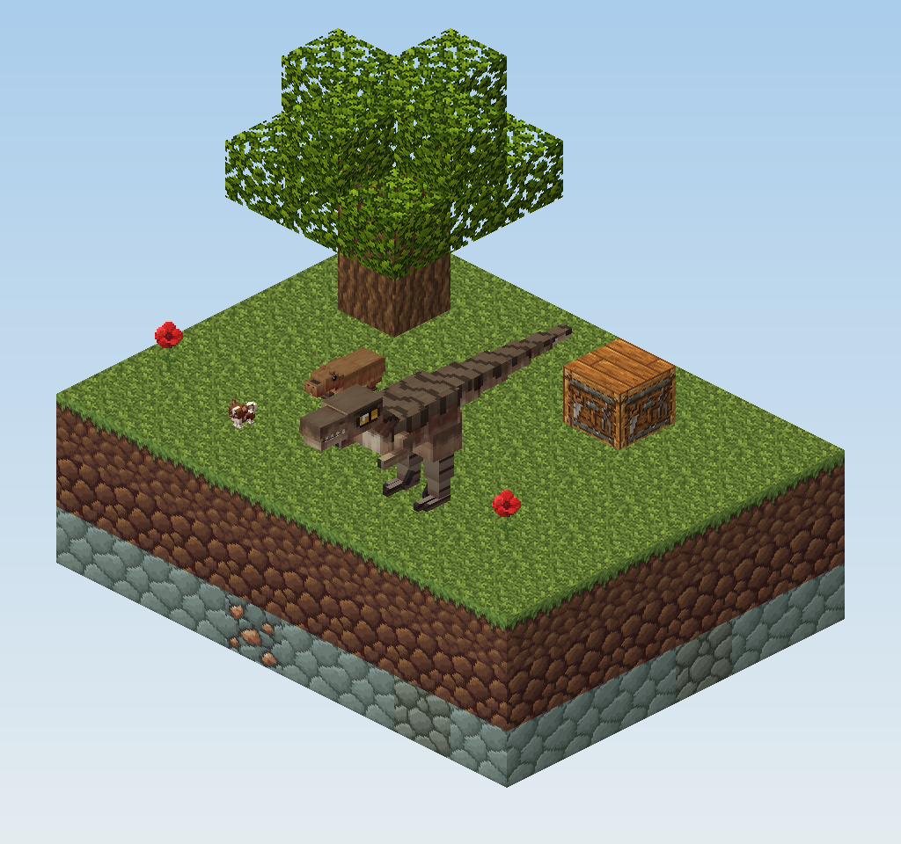
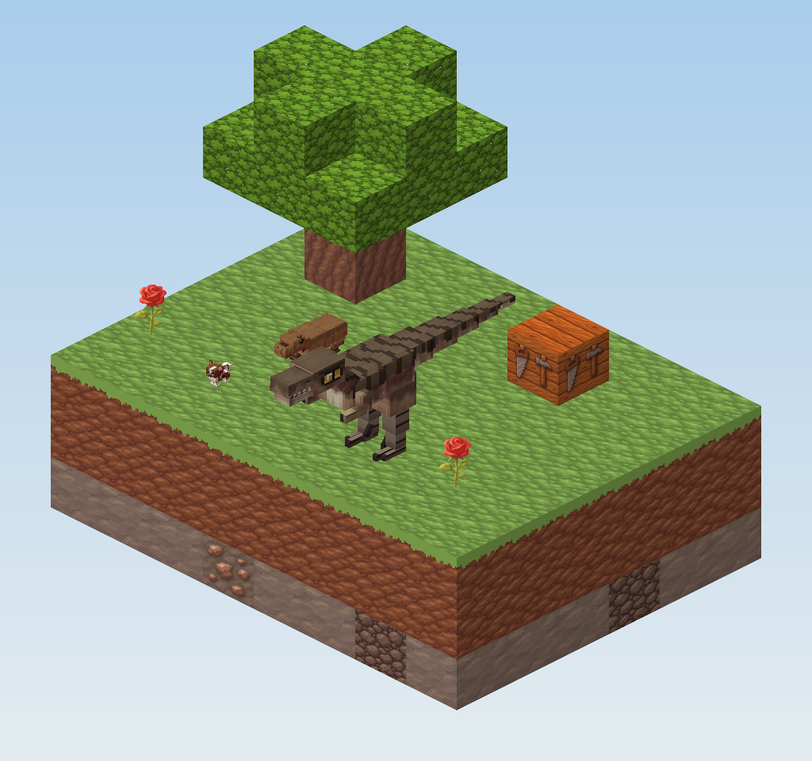
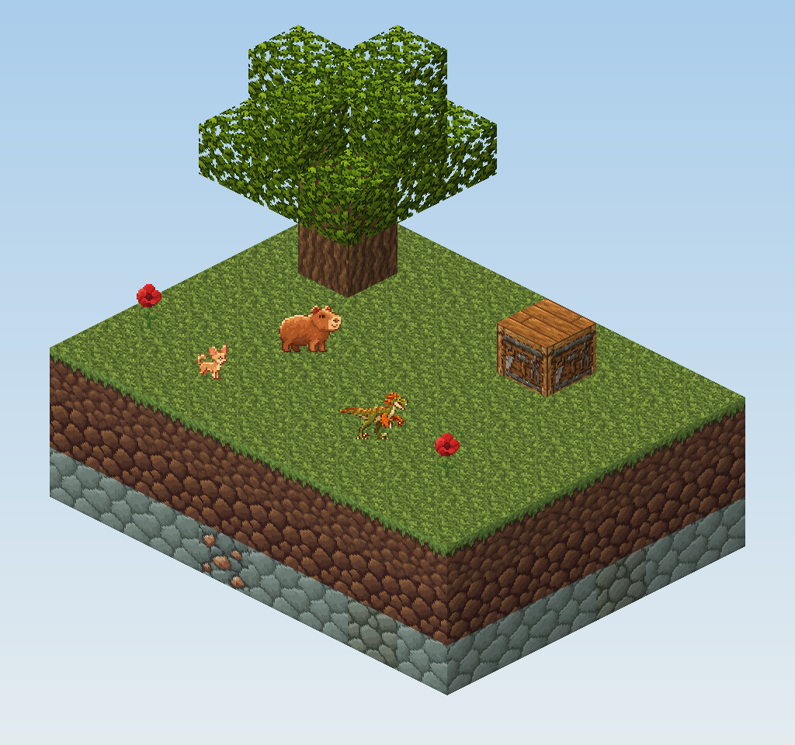

<title>Style Guide Test</title>
<meta name="claude:viewport-fit-sides" content="cover">
<link rel="preconnect" href="https://fonts.googleapis.com">
<link rel="stylesheet" href="https://fonts.googleapis.com/css2?family=Alegreya:wght@700&family=Alegreya+Sans:wght@400;500;700&family=JetBrains+Mono:wght@500&display=swap">
<style>
/* Layout: the world scene first (guides vs game now), then items by the guide's twelve kinds, blocks,
   animals; each card: as generated, cut to its grid, the game's current one. One dark look: the game UI. */
:root {
  --bg: #1b1310; --panel: #271c16; --slot-in: #352015; --bronze: #9c6a3c; --line: #4a3424;
  --fg: #f5e4bc; --dim: #c2ac88; --amber: #ffbe45; --magenta: #ff00ff;
  --display: "Alegreya", Georgia, serif; --body: "Alegreya Sans", system-ui, sans-serif; --mono: "JetBrains Mono", ui-monospace, monospace;
  color-scheme: dark;
}
body { background: var(--bg); color: var(--fg); font: 17px/1.5 var(--body); }
main { max-width: 1240px; margin: 0 auto; padding-block: 28px 56px;
  padding-left: max(16px, env(safe-area-inset-left, 0px)); padding-right: max(16px, env(safe-area-inset-right, 0px)); }
h1 { font: 700 36px/1.1 var(--display); margin: 0 0 6px; text-wrap: balance; }
h2 { font: 700 30px/1.2 var(--display); margin: 40px 0 6px; }
h3.kind { font: 700 22px/1.2 var(--display); color: var(--amber); margin: 28px 0 0; }
p { margin: 0 0 12px; max-width: 72ch; color: var(--dim); }
.scenes { display: grid; grid-template-columns: repeat(auto-fit, minmax(min(100%, 520px), 1fr)); gap: 16px; margin-top: 12px; }
.scenes figure { margin: 0; background: var(--panel); border: 2px solid var(--bronze); border-radius: 6px; padding: 10px; min-width: 0; }
.scenes img { width: 100%; image-rendering: pixelated; display: block; border-radius: 3px; }
figcaption { font: 500 12px/1.4 var(--mono); color: var(--dim); margin-top: 6px; }
.hotbar { display: flex; flex-wrap: wrap; gap: 2px; padding: 6px; background: #120c09; border: 2px solid var(--bronze); border-radius: 4px; margin-top: 8px; }
.hotlabel { font: 500 12px var(--mono); letter-spacing: .06em; text-transform: uppercase; color: var(--dim); margin-top: 14px; }
.cards { display: grid; grid-template-columns: repeat(auto-fill, minmax(min(100%, 380px), 1fr)); gap: 16px; margin-top: 10px; }
.card { background: var(--panel); border: 1px solid var(--line); border-radius: 6px; padding: 14px; display: flex; flex-direction: column; gap: 10px; min-width: 0; }
.card header { display: flex; justify-content: space-between; align-items: baseline; gap: 10px; }
.card h3 { font: 700 18px var(--body); margin: 0; text-transform: capitalize; }
.tag { font: 500 12px var(--mono); color: var(--dim); }
.quad { display: grid; grid-template-columns: repeat(4, 1fr); gap: 8px; }
.quad figure { margin: 0; min-width: 0; }
@media (max-width: 480px) { .quad { grid-template-columns: repeat(2, 1fr); } }
.pic.raw.green { background: #00ff00; }
.duo { display: grid; grid-template-columns: repeat(2, 1fr); gap: 8px; }
.duo figure { margin: 0; min-width: 0; }
.pic.wide { aspect-ratio: 3 / 2; }
.what { font-size: 14px; margin: 0; }
.checks { font: 500 12px/1.4 var(--mono); color: var(--dim); margin: 0; }
.pic { aspect-ratio: 1; max-width: 100%; border: 1px solid var(--line); border-radius: 3px; display: grid; place-items: center; overflow: hidden; }
.pic img { width: 100%; height: 100%; object-fit: contain; image-rendering: pixelated; }
.pic.raw { background: var(--magenta); }
.pic.slot { background: var(--slot-in); padding: 8%; }
.pic.tile img { object-fit: cover; }
.pic.none { background: var(--slot-in); color: var(--dim); font: 500 12px/1.3 var(--mono); text-align: center; padding: 8px; }
.slots { display: flex; gap: 8px; align-items: flex-end; flex-wrap: wrap; }
.slot { padding: 4px; background: var(--slot-in); border: 2px solid; border-color: #120c09 #683e26 #683e26 #120c09; border-radius: 2px; display: grid; place-items: center; }
.slot img { image-rendering: pixelated; display: block; }
.note { background: var(--panel); border-left: 3px solid var(--amber); padding: 10px 14px; border-radius: 3px; max-width: 80ch; }
.note p { margin: 0; }
</style>
<main>
  <h1>Style Guide Test</h1>
  <p>{{COUNT}} of our own things made with your style guides: items from all twelve kinds in the item guide, blocks from the block guide, and three of our animals from the animal guide. Nothing here is in the game yet.</p>
  <p>Made twice. The <b>first run</b> used the guides exactly as written, and was stopped partway through. The <b>second run</b> used them with what our own skills had learned folded in: an outline per part, a green background for purple things, and every image checked (chunky pixels, outline darker than the inside, no red-brown line, a seamless tile) and made again, up to twice, when a check failed. Both runs used the guide's master prompt, its material colors and the matching reference image, drawn on the exact 32-pixel grid.</p>
  <p>{{MISSING}}</p>
  <div class="note"><p><b>What I see.</b> The second run is the most consistent set we've had. All 54 passed the checks, 50 of them on the first try. Stone, the grass side and the planks needed a second or third try for a seam, and the earthworm only failed because the cutter expected magenta: the model put the pink worm on green by itself, as the updated guide says, and the cutter now looks for either. In the world scene the sage stone, dirt clods, grass and walnut wood read as one place, and the items share that warm, light palette. Weak spots: the saddle reads like a bird at 32 pixels, the guide's poppy is small next to our painted rose, and the 32-pixel blocks are visibly coarser than today's 64-pixel ones (that is the size question to decide).</p></div>

  <h2>In a small world</h2>
  <p>The same island three times. Faces are lit as in the game: top 100%, left 80%, right 60%. The capybara, chihuahua and Utahraptor in the first and last are our real box models from the game (the animals mod's models and painted textures, at rest and at real size), drawn into the scene. The middle one has the guide's flat sprites instead, as a concept of the colors. The game's blocks today are painted at 64 × 64, the grey grass and leaves tinted about as in plains.</p>
  <div class="scenes">
    <figure><figcaption>Guide blocks and flowers, our 3D animals</figcaption></figure>
    <figure><figcaption>The game today, our 3D animals</figcaption></figure>
    <figure><figcaption>Guide blocks with the guide's animal sprites (concept)</figcaption></figure>
  </div>
  <div class="hotlabel">Guide items, in slots</div>
  <div class="hotbar">{{HOT_NEW}}</div>
  <div class="hotlabel">The same items in the game today</div>
  <div class="hotbar">{{HOT_NOW}}</div>

  <h2>Items</h2>
  <p>Each card: the second run's picture as generated, the 32 × 32 sprite cut from it (on the slot color), the first run's sprite, and the game's current icon. Under it, how the checks went. <i>grid</i> is how regularly the color edges repeat on one pixel grid (0.12 passes, smooth paintings score about 0.06). <i>outline</i> is the edge's brightness over the inside's (under 0.9 passes). <i>red_line</i> is the share of the edge in the red-brown line image models fall back to (under 0.45 passes).</p>
  {{ITEMS}}

  <h2>Blocks</h2>
  <p>Full blocks shown tiled 3 × 3, so any seam shows; the plants are on the slot color. <i>seam</i> compares the tile's opposite edges with its other neighboring pixels (1 means the seam looks like any other pixel step; under 2.2 passes). The grass and leaves were asked for in full color for this test. The game draws them grey and tints them by biome.</p>
  <div class="cards">{{BLOCKS}}</div>

  <h2>Animals</h2>
  <p>48 × 32 sprites, side view, from the animal guide.</p>
  <div class="cards">{{ANIMALS}}</div>

  <h2>The other guides</h2>
  <p>Model blocks, monsters and characters, UI, effects and sky, made with the game-art skill's one script from each guide's master prompt and type line. Our own art went along as the style key instead of the guides' pack sheets (the UI ones are your own UI sheets). Monsters and characters, like the animals, are concepts: in the game they are box models.</p>
  {{MORE}}
</main>
